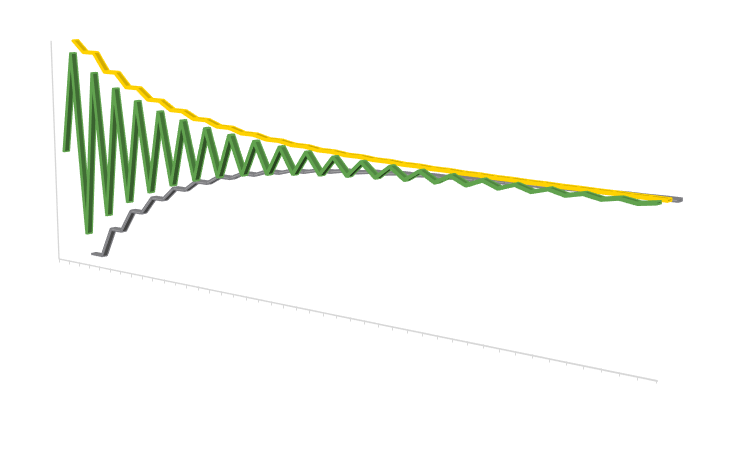

KTAB is an open-source toolkit for assembling models that allow the systematic and rigorous analysis of collective decision-making processes (CDMPs).
KTAB has been developed to meet the need for widely available, state-of-the-art, supported, and open source software that facilitates the modeling and analysis of collective decision-making. The software libraries and source code for KTAB are released as open source under the MIT license.
The main development site for KTAB is the King Abdullah Center for Petroleum Studies and Research (KAPSARC) in Riyadh, Saudi Arabia. The KTAB homepage on the KAPSARC website is here
